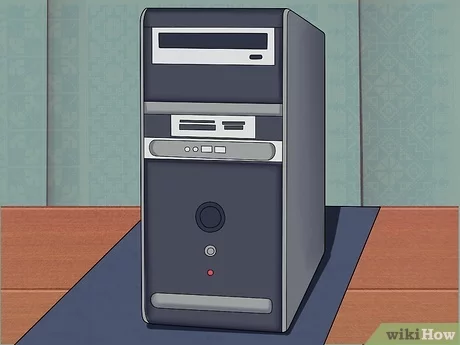
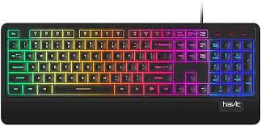
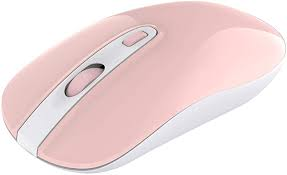
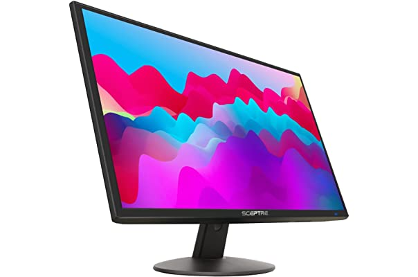

Destornillamos los tornillos las partes laterales(tapas)
procedemos a limpiar el polvo con el soplador
sacar la tierra del CPU de atras para adelante
agarrar el ventilador y seguir limpiando, sin llegar a tocar los cables y los demas elementos
limpiar el CPU con alcohol isopropilico
sacar la fuente de poder y la barrita que contiene todos los cables
sacar el cable auxiliar de la placa madre
desconectar el conector de energia
lector DVD a la derecha
destornillar los cuatro tornillos que sujetan la fuente de poder del CPU y sacarla con mucho cuidado
quitar los cuatro tornillos que sujetan a la fuente de poder
sacr el ventilador de la carcasa
sopletear la fuente de poder y el ventilador
sacar y limpiar las partes de la fuente de poder con el soplador
limpiar la tierra de las aspas del ventilador con cotonetes y alcohol isopropilico de adentro hacia afuera
limpiar con franela las aspas del ventilador
verificar si suenan las aspas del ventilador, si no suena esta bien limpiado
empezar a armar la fuente de poder (poner tornillos, poner la ventiladora a la fuente de poder)
Sacar rl ventilador auxiliar
Limpiar las partes laterales(tapas) con alcohol isopropilico
Volver a colocar la fuente de poder y ventilador auxiliar
Colocar los tornillos
Asegurar bien los tornillos
Conectar los cables del lector CD
Asegurar los cables para que no choquen con la placca madre
Limpiar las tapas exteriormente
Asegurar las tapas con los tornillos
conectar el CPU con el monitor y demás dispositivos
Comprobar el funcionamiento del CPU
Desconectar el teclado
Dar pequeños golpes para sacar el polvo
Utilizar el soplador para sacar el resto de polvo que quede
Tomar foto del teclado
Sacar las teclas 1 po 1 del 1-9 y A-Z
Limpiar las teclas 1 por 1
Limpiar los orificios de las teclas sin tocar el medio(plástico blanco)
Una vez limpio, volver a colocar las teclas guiandonos por la foto
Una vez armado el teclado limpiar todo el teclado con alcohol isopropilico
Conectar el teclado al CPU y monitor
Desconectar el mouse del CPU y monitor
Limpiar con alcohol isopropilico y franela el mouse y el cable
Una vez limpio el mouse conecctar al CPU y monitor
Apagar la PC
Limpiar la pantalla con franela y limpiador de pantalla Philips
Limpiar la pantalla de arriba hacia abajo y de derecha a izquierda
